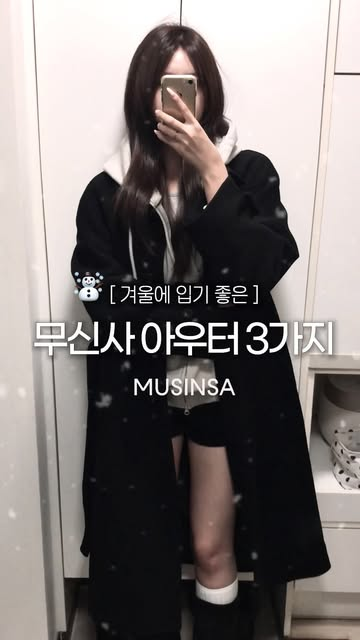
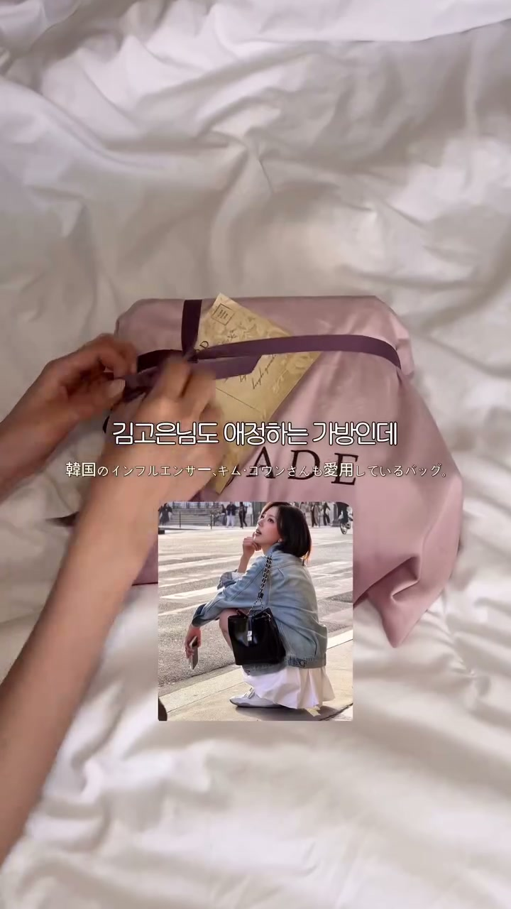

무신사 1위
부츠
참고용 문구입니다. 유영님이 평소 쓰시는 말투와 스타일로 자유롭게 바꿔주세요.
이번에 소개할 제품

접어 신어 두 가지 코디 연출. 길게 올려 신거나 접어 내려, 코디에 맞게 연출할 수 있어요.
종아리 커버. 종아리를 감싸는 부츠 실루엣이 포인트예요. 스커트나 바지와 매치한 착용 핏을 보여주셔도 좋아요.
편한 착화감. 직접 신어보신 느낌을 유영님 말투로 자연스럽게 소개해 주세요.
페탈 제품 자세히 보기 ↗썸네일과 첫 자막
유영님 게시물 · 무신사·무진장 썸네일 4개
유영님 게시물 중 무신사·무진장이 표시된 썸네일을 모았습니다. 모두 참고용이며, 문구와 구도는 유영님 스타일에 맞춰 자유롭게 정해 주세요.

랭킹 캡처 활용 요청
첨부드린 랭킹 캡처에서 1위 상품이 잘 보이도록 필요한 부분을 잘라 영상에 넣어주시길 바랍니다. 삽입 위치와 길이는 영상 흐름에 맞춰 자유롭게 정해 주세요.
유영님 체인백 소개 영상의 이미지 삽입 장면 두 컷과, 정연님의 상품 페이지 캡처 삽입 예시입니다. 랭킹 인증 사례는 아니며, 영상 위에 이미지를 배치하는 방식만 참고해 주세요.


선택 참고용입니다. 마음에 드는 구도만 자유롭게 참고해 주세요. 촬영 장면과 구성은 유영님께 맡기겠습니다.
참고 영상 · 구성은 자유롭게
조회수 263,393회